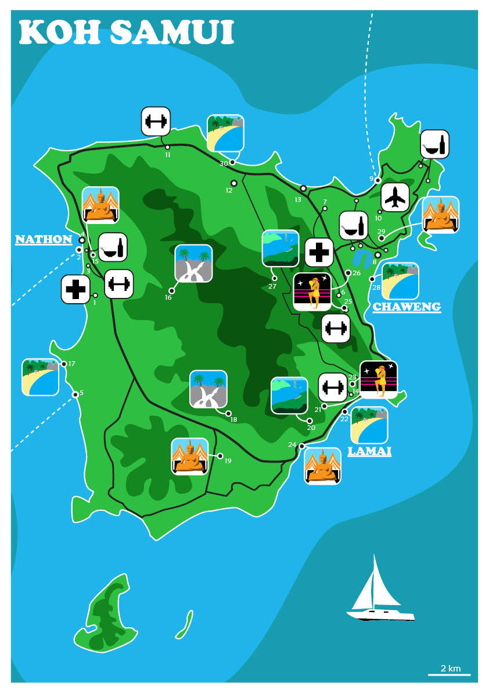

Koh Samui

Detta var slutprojektet i en designkurs. Vi skulle skapa en guide-karta över en valfri plats och jag valde då den thailändska ön Koh Samui där jag då bodde. Vi skulle även placera ut några platser på kartan. Jag gjorde kartan i Illustrator och jag hade roligt med att skapa de olika ikonerna som jag fyllde kartan med. Jag kallade den för Covid-19 guide map då mycket var stängt under pandemin.